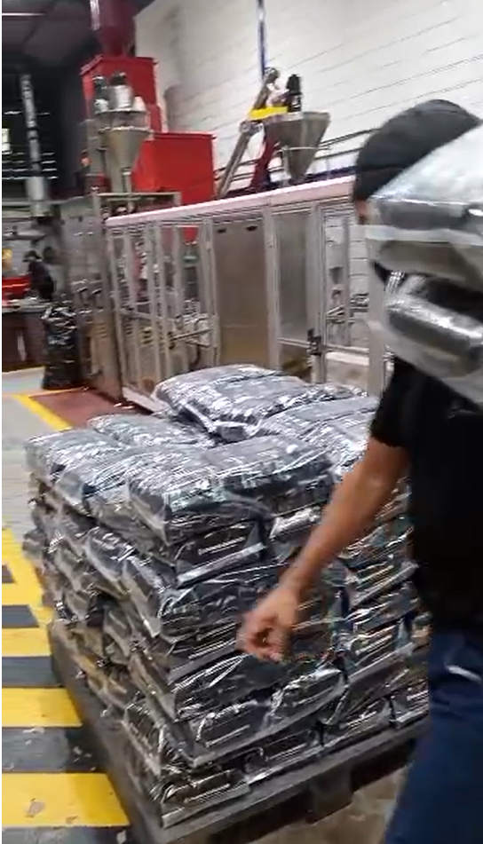

Infraestructura para café de especialidad
Contamos con equipos industriales de gran escala para el tratamiento del grano y el tostado, con estándares de higiene y seguridad. Así aseguramos lotes homogéneos y capacidad para maquila, marca propia y exportación.
